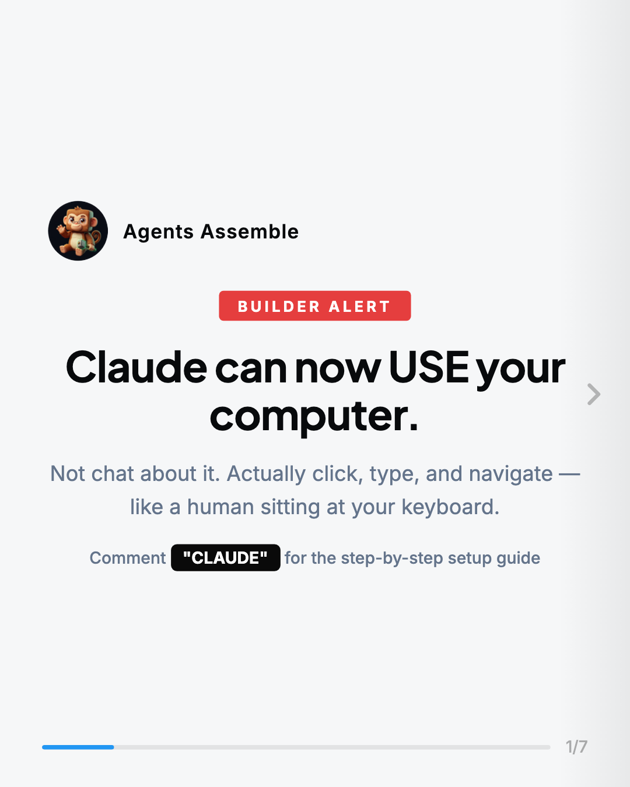
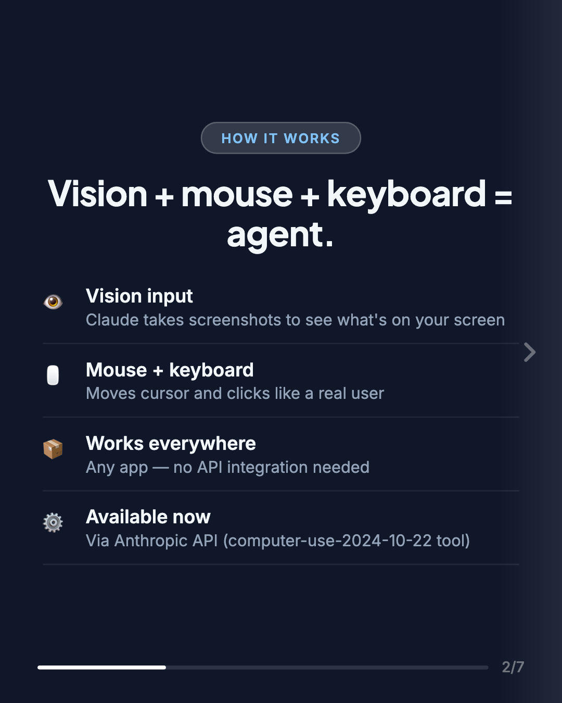
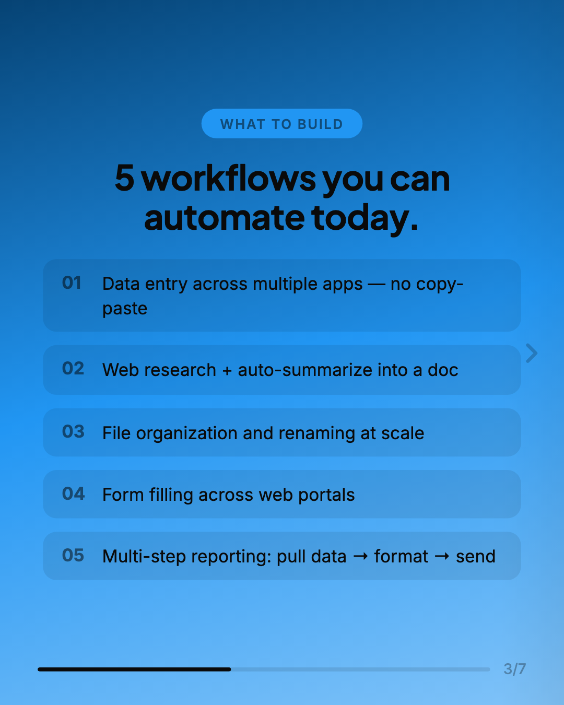
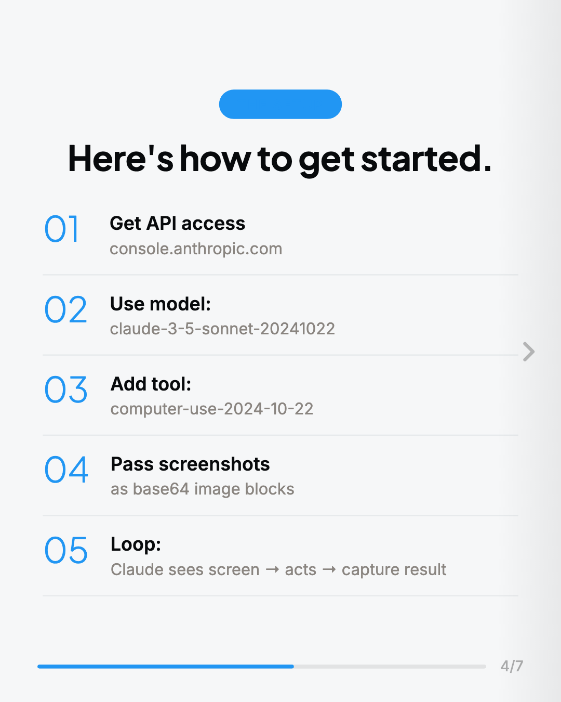
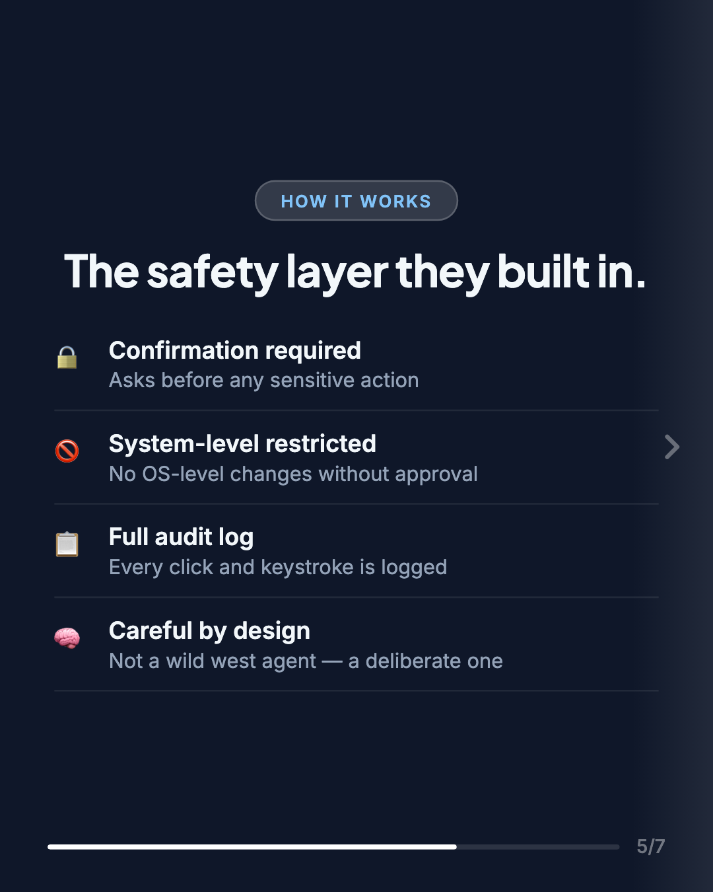
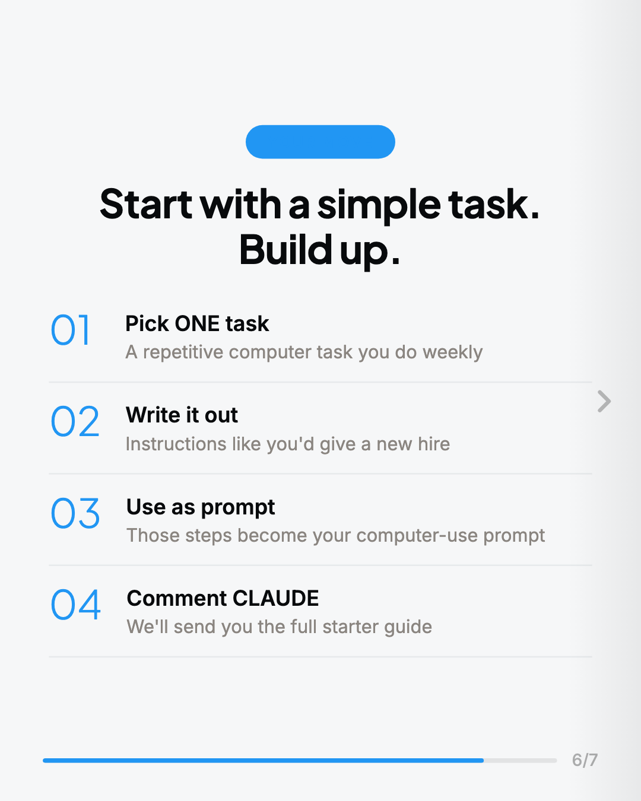
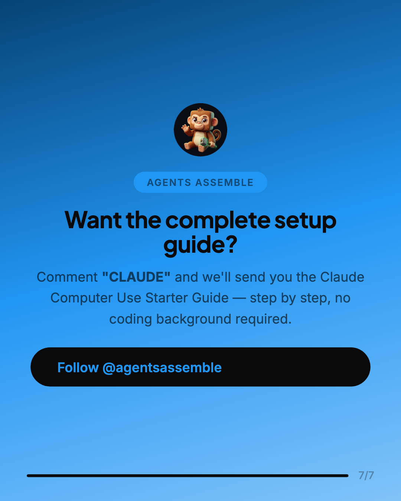

Key Takeaways
01
Claude can now take screenshots, move your mouse, click buttons, and fill forms on your Mac
02
The computer_use_20241022 tool works through the Anthropic API with a simple Python setup
03
Resolution is capped at 1280x800 for safety — Claude sees a scaled-down version of your screen
04
Every action requires explicit tool calls — Claude cannot act without your API sending requests
05
Anthropic recommends running in a sandboxed VM or container for production deployments
06
This is the foundation for AI agents that can automate any desktop workflow end to end
Analysis
---
Claude Can Now Control Your Computer — Here's How to Build With It
---
A step-by-step guide to setting up Claude's computer use API, choosing your first automation workflow, and running your first desktop agent.
---
**1. Computer use works differently from traditional automation tools.** Most automation (Selenium, Playwright, Zapier) connects to apps via their APIs or DOM structure. Claude's computer use works at the pixel level — it sees your screen via screenshots and interacts exactly how a human would: cursor movement, clicks, keystrokes. This means it can operate any application you can see, not just ones with an integration.
**2. The setup is simpler than it looks.** You don't need a custom frontend or complex infrastructure. You need an Anthropic API key, a way to capture screenshots (there are Python libraries for this), and a loop that passes screenshots to Claude and executes the actions it returns. Most developers can have a working prototype in under 2 hours.
**3. Five workflow categories that are ready to automate now.** Data entry across systems, web research with structured output, file organization at scale, form-based workflows on internal portals, and multi-step reporting pipelines are all viable today. These share a common trait: they're repetitive, visual, error-prone, and currently done manually.
**4. Anthropic built meaningful safety guardrails in.** The system includes confirmation prompts before sensitive or irreversible actions, restricted access to system-level operations, and full audit logging of every action taken. This matters for anyone thinking about deploying this in a business context — it's not a hands-off autonomous agent, it's a careful, confirmable one.
**5. Latency is the honest limitation to plan around.** Each step in a computer-use loop involves a screenshot capture, an API call, and an action execution. For workflows with 20+ steps this adds up. Plan your first projects around tasks where accuracy matters more than speed — the ROI comes from replacing error-prone manual work, not from raw throughput.
---
Claude's computer use capability is available now through the Anthropic API. The key technical pieces: use model `claude-3-5-sonnet-20241022`, add the `computer-use-2024-10-22` tool to your API request, and your application handles the screenshot capture + action execution loop.
Claude sees the screen as an image. It decides what to do — move cursor to coordinates, click, double-click, type text, press keys, scroll — and returns those as structured action objects. Your code executes the action, captures a new screenshot, and passes it back. This is the core loop.
What makes this different from what's existed before isn't the AI — it's the visual interaction layer. Previous computer automation tools (RPA platforms, browser automation frameworks) work by reading the structure of the software itself: the DOM tree
Claude Can Now Control Your Computer — Here's How to Build With It
---
A step-by-step guide to setting up Claude's computer use API, choosing your first automation workflow, and running your first desktop agent.
---
**1. Computer use works differently from traditional automation tools.** Most automation (Selenium, Playwright, Zapier) connects to apps via their APIs or DOM structure. Claude's computer use works at the pixel level — it sees your screen via screenshots and interacts exactly how a human would: cursor movement, clicks, keystrokes. This means it can operate any application you can see, not just ones with an integration.
**2. The setup is simpler than it looks.** You don't need a custom frontend or complex infrastructure. You need an Anthropic API key, a way to capture screenshots (there are Python libraries for this), and a loop that passes screenshots to Claude and executes the actions it returns. Most developers can have a working prototype in under 2 hours.
**3. Five workflow categories that are ready to automate now.** Data entry across systems, web research with structured output, file organization at scale, form-based workflows on internal portals, and multi-step reporting pipelines are all viable today. These share a common trait: they're repetitive, visual, error-prone, and currently done manually.
**4. Anthropic built meaningful safety guardrails in.** The system includes confirmation prompts before sensitive or irreversible actions, restricted access to system-level operations, and full audit logging of every action taken. This matters for anyone thinking about deploying this in a business context — it's not a hands-off autonomous agent, it's a careful, confirmable one.
**5. Latency is the honest limitation to plan around.** Each step in a computer-use loop involves a screenshot capture, an API call, and an action execution. For workflows with 20+ steps this adds up. Plan your first projects around tasks where accuracy matters more than speed — the ROI comes from replacing error-prone manual work, not from raw throughput.
---
Claude's computer use capability is available now through the Anthropic API. The key technical pieces: use model `claude-3-5-sonnet-20241022`, add the `computer-use-2024-10-22` tool to your API request, and your application handles the screenshot capture + action execution loop.
Claude sees the screen as an image. It decides what to do — move cursor to coordinates, click, double-click, type text, press keys, scroll — and returns those as structured action objects. Your code executes the action, captures a new screenshot, and passes it back. This is the core loop.
What makes this different from what's existed before isn't the AI — it's the visual interaction layer. Previous computer automation tools (RPA platforms, browser automation frameworks) work by reading the structure of the software itself: the DOM tree
Visual Breakdown






